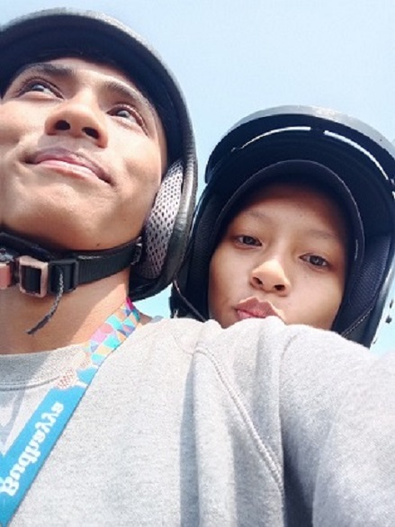

Devan & Cinta

Nandutkuu


Kesayanganku
Sederhana namun selalu membuatku bahagia
Ini adalah foto cewek aku yang paling aku sayang setelah ibu aku. Namanya ANANDA CINTA NURRAHIM. Dia adalah cewek yang tengil, lucu, rajin, mandiri — pokoknya aku sangat suka.
Tapi kadang kalau ngambek atau bad mood lamanyaa minta ampun 😅. Tapi beda lagi kalau udah baikan, jadi kaya bocil umur 3 tahun hehe.
Aku menyukainya bukan karena wajahnya saja, tapi karena dia sangat baik dan sederhana. Yaaa segitu aja deh yang aku ceritain 😁
Loppee u sayangggkuu nandutttt 💖
Devan

Nah, setelah tau cewek aku, sekarang giliran aku kenalan.
Aku Devan, cowoknya Nandutt (Nanda gendut) hehe. Diakuin ngga yaa? Biasanya menye-menye dulu, nantang aku, tengil banget pokoknya 😄
Aku mau cerita tentang hobiku. Hobiku suka berantem — tapi yang mendapatkan hasil, bukan kriminalitas yaa!
Dulu pas SD ikut bela diri Taekwondo terus lanjut sampai SMP. Tapi aku berhenti karena bosan. Setelah itu aku ikut kick boxing dan tarung derajat pas SMA.
Di sini aku merasa semangat banget karena selalu didukung sama sayangkuu ini ❤️
Alhamdulillah, aku bisa menang Popda di SMA ini dan juga Porda dengan juara 1. Itu aja deh, banyak banget kalau aku ceritain semua hehe 😁